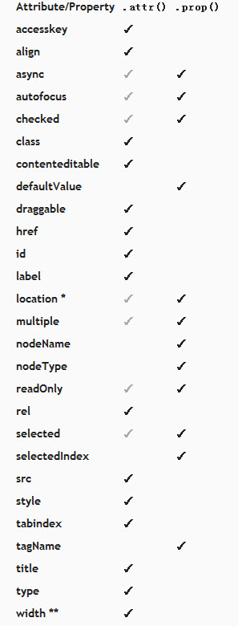

jquery操作checkbox以及jquery1.6中的.prop()和.attr()异同
最近在iteye的新闻中看到jQuery已经更新到了1.6.1。和之前版本的最大变化是增加了.prop方法。但是.prop()方法和.attr()方法，单从字面上很难区分。在汉语中properties和attributes都有表示“属性”的意思。
下面根据这篇博文，简要翻译了.prop()和.attr()的用法：
1、从1.5.2升级到1.6.1
通过介绍新方法.prop()以及.attr()方法的改变，jQuery1.6.1引起了一场关于attributes和properties之间有何区别和联系的激烈讨论。同时，1.6.1也解决了一些向后兼容性问题。当从1.5.2升级到1.6.1时，你不必修改任何attribute代码。
下面是关于jQuery1.6和1.6.1中Attributes模块变化的描述，以及.attr()方法和.prop()方法的首选使用。然而，正如前面所述，jQuery1.6.1允许你使用.attr()方法就像以前它被使用在所有的情况中一样。
2、发生了什么变化
Attributes模块的变化是移除了attributes和properties之间模棱两可的东西，但是在jQuery社区中引起了一些混乱，因为在1.6之前的所有版本中都使用一个方法(.attr())来处理attributes和properties。但是老的.attr()方法有一些bug，很难维护。jQuery1.6.1对Attributes模块进行了更新，并且修复了几个bug。
特别提到的是，boolean attributes，比如：checked,selected,readonly和disabled在1.6.1中和1.6之前的处理相同。这意味着下面的代码：
Js代码 收藏代码
$(“:checkbox”).attr(“checked”, true);
$(“option”).attr(“selected”, true);
$(“input”).attr(“readonly”, true);
$(“input”).attr(“disabled”, true);
甚至是这样的代码：
Js代码 收藏代码
if ( $(“:checkbox”).attr(“checked”) ) { /* Do something */ }
在1.6.1中没有必要为了保持之前期望的运行结果而发生任何改变。
为了让jQuery1.6中的.attr()方法的变化被理解的清楚些，下面是一些使用.attr()的例子，虽然在jQuery之前的版本中能正常工作，但是现在必须使用.prop（）方法代替：
首先，window或document中使用.attr()方法在jQuery1.6中不能正常运行，因为window和document中不能有attributes。它们包含properties(比如：location或readyState)，必须使用.prop()方法操作或简单地使用javascript原生的方法。在jQuery1.6.1中，window和document中使用.attr()将被自动转成使用.prop，而不是抛出一个错误。
其次，checked,selected和前面提到的其它boolean attributes，因为这些attributes和其相应的properties之间的特殊关系而被特殊对待。基本上，一个attribute就是以下html中你看到的：
Js代码 收藏代码
<input type=”checkbox” checked=”checked”>
boolean attributes，比如：checked，仅被设置成默认值或初始值。在一个checkbox的元素中，checked attributes在页面加载的时候就被设置，而不管checkbox元素是否被选中。
properties就是浏览器用来记录当前值的东西。正常情况下，properties反映它们相应的attributes(如果存在的话)。但这并不是boolean attriubutes的情况。当用户点击一个checkbox元素或选中一个select元素的一个option时，boolean properties保持最新。但相应的boolean attributes是不一样的，正如上面所述，它们仅被浏览器用来保存初始值。
Js代码 收藏代码
$(“:checkbox”).get(0).checked = true;
// Is the same as $(":checkbox:first").prop(“checked”, true);
在jQuery1.6中，如果使用下面的方法设置checked：
``$(“:checkbox”).attr(“checked”, true);
1 | <html> |
将不会检查checkbox元素，因为它是需要被设置的property，但是你所有的设置都是初始值。
然而，曾经jQuery1.6被释放出来的时候，jQuery团队明白当浏览器仅关心页面加载时，设置一些值不是特别的有用。所以，为了保持向后兼容性和.attr()方法的有用性，我们可以继续在jQuery1.6.1中使用.attr()方法取得和设置这些boolean attributes。
最普通的attributes是checked,selected,disabled和readOnly，但下面是jQuery1.6.1支持的使用.attr()动态地取得和设置boolean attributes/properties的完整列表：
Js代码 收藏代码
autofocus, autoplay, async, checked, controls, defer, disabled,
hidden, loop, multiple, open, readonly, required, scoped, selected
（译者注：大部分都是html5新增的属性）
还是建议使用.prop()方法来设置这些boolean attributes/properties，即使这些用例没有转换成使用.prop()方法，但是你的代码仍然可以在jQuery1.6.1中正常运行。
下面是一些attributes和properties的列表，正常情况下，应该使用其对应的方法(见下面的列表)来取得和设置它们。下面的是首用法，但是.attr()方法可以运行在所有的attributes情况下。
注意：一些DOM元素的properties也被列在下面，但是仅运行在新的.prop()方法中

例如: window.location
*如果需要在(if needed over) .width()
.attr()和.prop()都不应该被用来取值/设值。使用.val()方法代替(即使使用.attr(“value”,”somevalue”) 可以继续运行，就像1.6之前做的那样)
3、首选用法的概述
.prop()方法应该被用来处理boolean attributes/properties以及在html(比如：window.location)中不存在的properties。其他所有的attributes(在html中你看到的那些)可以而且应该继续使用.attr()方法来进行操作。
上面的概述已经描述的够清楚了，我也没有必要再总结了。